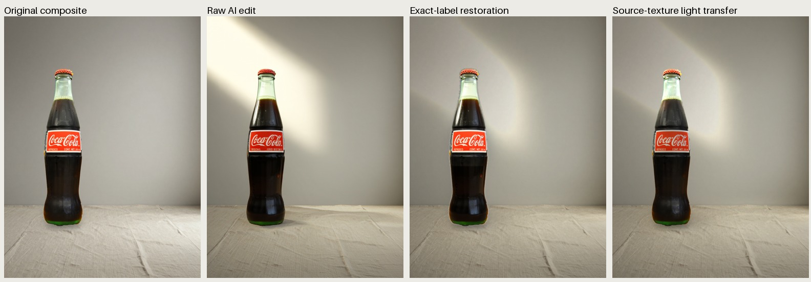
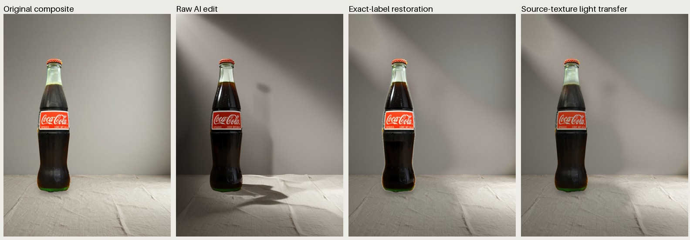

两次本地 Mage-Flow 编辑及千问看图评审。左起：原始合成、AI 原始编辑、严格恢复标签、保留原纹理的光照转移。没有商业通过稿；不能把标签像素相同等同于真实材质。
Raw and exact-label variants rejected. Lighting transfer remains experimental; no commercial PASS.

Raw and exact-label variants rejected. Lighting transfer remains experimental; no commercial PASS.
